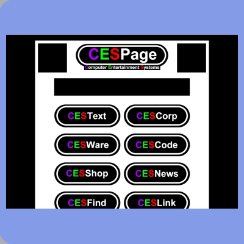

Forth Design : 1999
Back to a non-frames layout it has two advert graphics at either side of the title. This design saw the introduction of the white border around the
"barrel-shaped" graphics used for titles and buttons.


Design Four